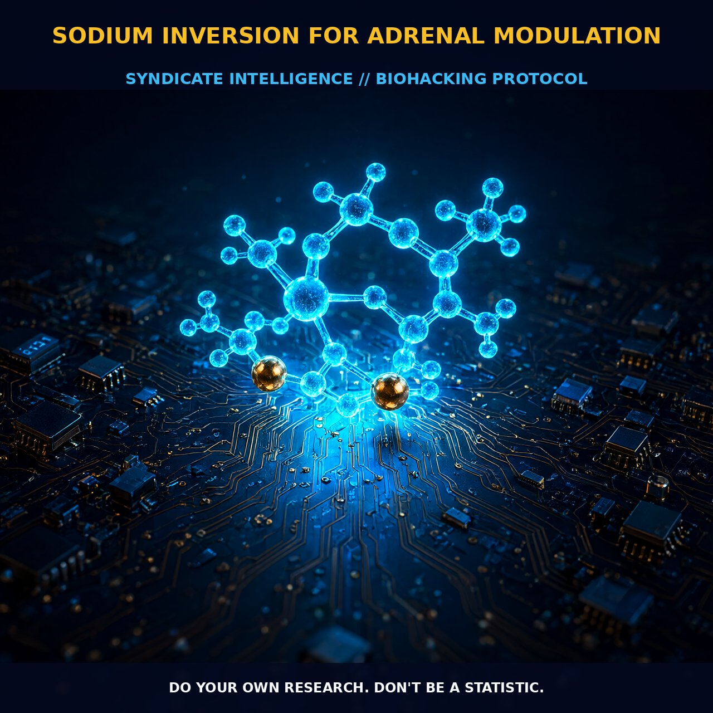

Osmotic Inversion of the Pituitary-Adrenal Axis via Sodium

1. Osmotic Inversion of the Pituitary-Adrenal Axis
The pituitary-adrenal axis is not a static circuit but a dynamic osmotic engine. Its operation hinges on a delicate salt-load duration paradox. Short-term salt loading (acute phase) modulates corticotropin responsiveness by amplifying the plasma release of Adrenocorticotropic Hormone (ACTH) in response to Corticotropin-Releasing Hormone (CRH). Crucially, this surge maintains baseline adrenal sensitivity, creating a state of heightened reactivity. The glands remain primed for vigorous output without succumbing to suppression or exhaustion.
Conversely, prolonged salt exposure introduces a distinct inhibitory effect. Over an eight-day horizon, the axis undergoes 'inversion,' resulting in blunted ACTH and corticosterone responses post-immobilization and CRH stimulation. This adaptation suggests that chronic high-sodium states force the adrenals to downregulate output capacity, establishing a protective yet potentially hypofunctional baseline. Notably, this inhibition alters circadian rhythms, with plasma ACTH and corticosterone levels remaining elevated in the evening, indicating a persistent shift in the hypothalamic-pituitary-adrenal setpoint.
2. Electrolytic Synergy: Magnesium, Sodium, and Adrenal Stability
Adrenal stability during sodium inversion is dictated by the tripartite interaction between magnesium, sodium, and adrenaline. In states of high arousal, the body depletes magnesium, calcium, potassium, and sodium from extracellular fluid as it burns through catecholamines. Magnesium serves as the critical buffer, mitigating the heart-damaging effects of excess epinephrine and norepinephrine.
Without adequate magnesium, the cardiovascular system becomes vulnerable to contradictory high-catecholamine states, risking arrhythmias and vascular constriction despite energy availability. Unrefined sea salt (containing seventy-two trace minerals) provides the necessary sodium foundation while supporting blood pressure balance. This mineral synergy transitions the body from erratic adrenaline release to sustained modulation, preventing adrenal depletion.
3. Tactical Protocol Implementation
To harness sodium inversion, initiate a low-dose magnesium protocol, starting at approximately one-quarter of the standard recommended dose. This gradual introduction prevents overwhelming systems already compromised by low blood pressure due to chronic deficiency. Simultaneously, integrate unrefined Celtic or pink Himalayan sea salt into daily hydration.
The optimal ratio is ¼ teaspoon of sea salt per quart of water, which optimizes sodium levels without inducing excessive fluid retention or hypertension. Monitor stress resilience and cardiovascular stability rather than relying solely on systolic/diastolic readings. Ensure hydration intake matches roughly half your body weight in ounces daily to facilitate osmotic transport. This protocol establishes a robust electrical environment for the heart, enabling sustained energy output and mitigating catecholamine crash.
4. Prostar Life Hack: The Osmotic Adrenal Prime
The 1-Quart Morning Priming: Before caffeine or metabolic stressors, dissolve ¼ tsp of unrefined sea salt into 32oz (1 quart) of room-temperature water and consume upon waking. This creates an immediate osmotic signal that primes the pituitary for ACTH responsiveness while providing the magnesium-bound sodium buffer necessary to stabilize initial catecholamine spikes. Pair with a low-dose magnesium supplement to prevent subsequent depletion, ensuring your adrenals remain reactive rather than suppressed.
Prostar Life Hack
The 1-Quart Morning Priming: Before caffeine or metabolic stressors, dissolve ¼ tsp of unrefined sea salt into 32oz (1 quart) of room-temperature water and consume upon waking. This creates an immediate osmotic signal that primes the pituitary for ACTH responsiveness while providing the magnesium-bound sodium buffer necessary to stabilize initial catecholamine spikes. Pair with a low-dose magnesium supplement to prevent subsequent depletion, ensuring your adrenals remain reactive rather than suppressed.
[ AUTHOR: LEAD TECHNICAL RESEARCHER ]
[FRESH ON CHAIN (FULL): 78434b4733d7ca59... ]